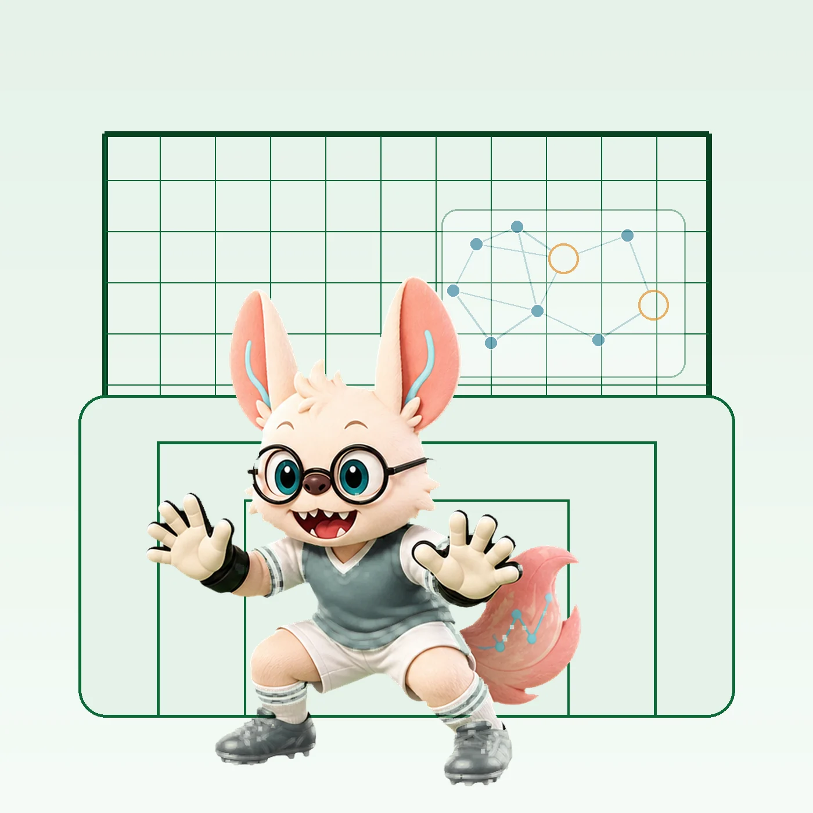
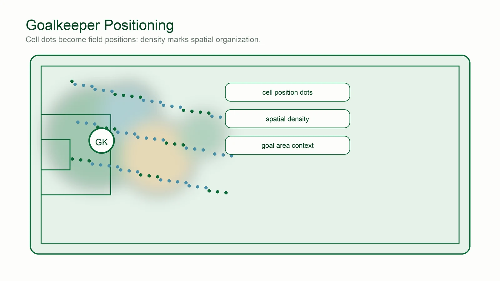
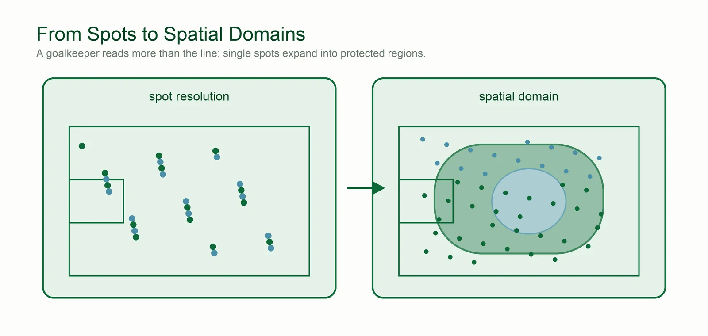

Spatial Transcriptomics Technologies

The Goalkeeper's Guide.
「位置感，就是门线前的全部学问。」
Watch a keeper for ninety minutes and you learn that goalkeeping is geography: where you stand decides what you can reach. Spatial transcriptomics is that geography for cells — six scenes from the six-yard box, re-read as spatial analysis.
Geography before reflexes
Before any shot comes, the keeper has already won or lost the duel — by where they chose to stand. The save is just the confirmation.
Spatial context itself. Knowing where a cell stands is data, just like knowing what it can do. See why it matters ↓
Millimetre verdicts
Goal-line technology watches one line at centimetre precision and misses everything else; the stadium cameras cover the whole pitch at a glance, in less detail.
Resolution vs coverage. Imaging-based methods give sub-cellular detail on fewer targets; sequencing-based arrays cover the whole transcriptome at coarser spots. See the three categories ↓
The sweeper-keeper
Neuer is never just on the line — he reads the entire box, steps out early, and owns the space between defense and goal.
Spatial domains, not just spots. Good analysis reads neighborhoods and domains, not only isolated cells. See spatial analysis ↓
Man-mark or hold the zone
Assign a defender to shadow one striker, or hold a zone and let the structure do the work — two legitimate ways to defend the same box.
Cell-level vs domain-level. Segment individual cells, or analyze spatial domains and niches — both are valid reads of the same tissue.
Homework before the penalty
Before every penalty the keeper studies the taker's habits — favorite corner, run-up rhythm, recent form.
Cell–cell communication. Ligand–receptor analysis is exactly this: reading what neighboring cells are about to do from their signals. See the workflows ↓
Distribution from the back
Modern keepers start the attack: where you stand decides which pass is even possible. Position shapes every downstream option.
Spatially-informed downstream analysis. Spatially variable genes and region-specific functions only make sense with location kept. See the workflows ↓
好门将一半靠反应，一半靠站位 —— spatial context turns expression into geography.


Evolution of Spatial Transcriptomics (2016-2026)

Figure 1. Timeline of spatial transcriptomics technology development.
Upper track (teal): sequencing-based methods from original ST (2016) through Visium, Slide-seq, Seq-Scope (2021), Stereo-seq (2022), to Visium HD (2023). Lower track (orange-coral): imaging-based methods from MERFISH foundation (Chen et al., 2015) through STARmap, seqFISH+, MERSCOPE, Xenium, and CosMx. Gold stars indicate breakthroughs. Bottom scale shows resolution progression from 100μm to subcellular.
2026 additions: Xenium Prime (5,000-plex imaging panels), STARmap PLUS (integrated transcript + protein in situ mapping), BANKSY-style joint cell-typing/domain-segmentation methods, and the first whole-organ atlases assembled at single-cell spatial resolution.
What is Spatial Transcriptomics?
Spatial transcriptomics refers to a collection of methods that measure gene expression while preserving the spatial location of transcripts within tissues. Unlike traditional RNA-seq that requires tissue homogenization (losing spatial information) or single-cell RNA-seq that requires cell dissociation (losing tissue context), spatial transcriptomics maintains the native tissue architecture while profiling the transcriptome.
Why Spatial Context Matters
- Tissue Architecture Understanding: Cells behave differently based on their location - a cancer cell at the tumor edge behaves differently than one in the center
- Cell-Cell Interactions: Understanding signaling between neighboring cells requires knowing their spatial relationships (ligand-receptor pairs)
- Microenvironment Mapping: Immune cells, stromal cells, and parenchymal cells form functional niches that can only be studied in spatial context
- Disease Heterogeneity: Tumors, inflammatory lesions, and developmental abnormalities show spatial patterns that inform diagnosis and treatment
- 3D Organization: Tissues are three-dimensional; understanding cell clustering and connectivity patterns requires volumetric analysis
Three Major Technology Categories
1. Sequencing-Based Methods (Capture + Seq)
Use spatially-barcoded oligonucleotides to capture mRNA at defined positions, followed by next-generation sequencing. Offer whole-transcriptome coverage but lower spatial resolution.
2. Imaging-Based Methods (In Situ)
Detect transcripts directly in tissue using fluorescence hybridization or in situ sequencing. Achieve single-molecule/subcellular resolution but typically target specific gene panels.
3. Emerging & Multi-Modal Methods
Novel approaches combining transcriptomics with other modalities (protein, translation, temporal dynamics) or using innovative readout strategies.

Figure 2. Platform classification by spatial resolution (y-axis) and gene coverage (x-axis). Upper left (coral): imaging-based platforms (Xenium, CosMx, MERSCOPE, STARmap) with subcellular resolution and targeted panels. Upper right (teal): high-resolution sequencing (Stereo-seq, Seq-Scope, Visium HD, HDST) with whole transcriptome. Middle right (golden): near single-cell sequencing (Slide-seqV2). Lower right (light teal): classic sequencing (Visium, GeoMx WTA). Lower left: ROI-based targeted (GeoMx panel mode). Stars denote subcellular + whole transcriptome breakthroughs.
Technology Comparison Guide

Figure 3. Visual comparison of spatial resolution from multi-cell regions to individual transcripts. Left to right: GeoMx DSP ROI (50-600μm, 50-100+ cells), Visium (55μm, 5-10 cells), Slide-seqV2 (10μm, 1-3 cells), Visium HD/HDST (2μm, single-cell), Stereo-seq/Seq-Scope (0.5μm, subcellular, ★), Xenium/CosMx/MERSCOPE (<0.1μm, individual transcripts). Yellow outlines: sequencing-based; coral outlines: imaging-based. Sequencing platforms capture ~20K genes; imaging platforms detect 500-6,000 genes.

Figure 4. Technical workflows across three approaches. Left (Array-based Capture): tissue permeabilization → mRNA capture on barcoded spots → reverse transcription → library prep → demultiplexing; output: Spot × Gene matrix. Center (In Situ Barcoding): spatial barcode sequencing → tissue overlay → mRNA capture → sequencing → high-resolution mapping; output: subcellular spatial matrix (★). Right (Imaging-based): probe hybridization → platform-specific detection (combinatorial/RCA/ISS) → cyclic imaging → barcode decoding → single-molecule localization; output: (x,y,gene_id) coordinates. Bottom table compares resolution, genes, output format, FFPE compatibility, and throughput.
Resolution vs Coverage Trade-off
| Method | Resolution | Gene Coverage | Tissue Depth | Best For |
|---|---|---|---|---|
| Visium | 55 um spots | Whole transcriptome | 10 um sections | Discovery, FFPE tissues |
| VisiumHD | 2-8 um bins | Whole transcriptome | 10 um sections | High-resolution discovery |
| Slide-seq V2 | 10 um beads | Whole transcriptome | 10 um sections | Near-cellular resolution |
| Stereo-seq | ~500 nm | Whole transcriptome | Thin sections | Subcellular patterns |
| Xenium | Subcellular | 100-5000 genes | 5-10 um | Targeted, clinical FFPE |
| Xenium Prime | Subcellular | Up to 5,000 genes | 5-10 um | Large panels on clinical FFPE |
| seqFISH+ | Super-resolution | 10,000 genes | ~5 um | Discovery + localization |
| MERSCOPE | Subcellular (~100 nm) | 500-1,000 genes | 10 um | MERFISH-based targeted imaging, research grade |
| CosMx SMI | Subcellular | 1000+ genes | 5 um | High-plex imaging |
| Deep-STARmap | Single-cell | 1000+ genes | 60-200 um | 3D architecture |
| GeoMx DSP | ROI-based | Whole transcriptome | 10 um | Targeted enrichment |
Choosing the Right Technology
For Discovery Studies (Unbiased)
Use sequencing-based methods (Visium, VisiumHD, Slide-seq, Stereo-seq) when you need whole-transcriptome coverage without predefined gene targets. Best for hypothesis generation and atlas building.
For Targeted Validation (High Resolution)
Use imaging-based methods (Xenium, CosMx, seqFISH+, MERFISH) when you have specific genes of interest and need single-cell or subcellular resolution. Best for validating scRNA-seq findings.
For 3D Tissue Architecture
Use Deep-STARmap/RIBOmap for thick tissue (60-200 um) profiling to capture complete 3D cellular organization. Essential for studying cell-cell interactions and spatial clustering that are missed in 2D.
For Clinical FFPE Samples
Use Visium, Xenium, or GeoMx — platforms optimized for archival formalin-fixed paraffin-embedded tissue.
Quality Check: Assess RNA integrity using DV200 (% of RNA fragments >200 nucleotides). Aim for DV200 ≥50% for optimal results.
For Multi-Modal Integration
Use SPOTS for simultaneous protein + transcriptome, Deep-RIBOmap for transcription + translation, or combine Xenium + Visium + Chromium for comprehensive multi-platform profiling.

Figure 5. Decision flowchart for platform selection. Starting from sample type: FFPE samples → subcellular (Xenium, CosMx, MERSCOPE), multi-cell ROI (GeoMx), or whole transcriptome (Visium HD). Fresh frozen → Discovery path by resolution: subcellular (Stereo-seq, Seq-Scope ★), single-cell (Visium HD, Slide-seqV2), multi-cell (Visium); Hypothesis-driven path → imaging platforms or GeoMx; Protein+RNA → CosMx, Xenium, GeoMx; Rare cells → GeoMx DSP. Quick reference table summarizes recommendations by experimental need.
Landmark Papers Organized by Methodological Approach
1. Sequencing-Based Spatial Arrays (Capturing RNA onto surfaces)
Why these are grouped: These methods work by placing a tissue section onto a slide printed with barcoded capture spots (like beads or DNA nanoballs). The RNA is released from the tissue, captured on the surface, and then sequenced off-slide. The resolution is determined by the physical size and density of the capture spots on the array.
Spatial Transcriptomics Method (The Original) (2016)
Stahl et al. - The foundational paper introducing genome-wide spatial transcriptomics using arrayed barcoded primers on glass slides (the predecessor to 10x Genomics Visium).
- First spatial genome-wide approach
- 100 um diameter spots with positional barcodes
- Compatible with H&E staining for histology overlap
Slide-seq V2 (High-Resolution Beads) (2021)
Stickels et al. - A major improvement in array resolution using tightly packed, tiny microbeads instead of printed spots to achieve near-cellular resolution.
- 10 um bead resolution (near-cellular)
- 10-fold sensitivity improvement over original Slide-seq
- Genome-wide capture
Stereo-seq (Nanoscale Resolution) (2022)
Chen et al. - Utilizing DNA nanoball arrays to achieve the highest resolution among array-based methods, enabling subcellular definitions over large areas.
- Nanoscale resolution (~500 nm center-to-center)
- Very large field of view capability (whole embryos)
- Subcellular resolution with whole transcriptome
2. Imaging-Based In Situ Technologies (Visualizing RNA directly in tissue)
Why these are grouped: Instead of capturing RNA onto a slide, these methods leave the RNA inside the tissue cells. They use fluorescent probes and sophisticated microscopes to capture images of individual RNA molecules over multiple rounds of hybridization. They offer very high (subcellular) resolution but usually target a predefined panel of genes rather than the whole transcriptome.
STARmap (3D In Situ Sequencing) (2018)
Wang et al. - An innovative approach combining hydrogel tissue clearing with error-correcting sequencing directly inside intact tissue blocks.
- Truly 3D intact-tissue RNA sequencing (150 um thick)
- SEDAL sequencing with error correction
- Bypasses reverse transcription using SNAIL probes
seqFISH+ (Transcriptome-Scale Imaging) (2019)
Eng et al. - A landmark paper demonstrating that fluorescence imaging could scale to detect 10,000+ genes at super-resolution using clever color-coding strategies.
- Massive multiplexing (10,000 genes) via pseudocolour barcoding
- Subcellular mRNA localization at super-resolution
- High sensitivity (~35,000 individual transcript molecules detected per cell, across the 10,000-gene targeted panel — not 35,000 unique genes)
CosMx SMI (Commercial High-Plex Imaging) (2022)
He et al. - A representative paper for the new generation of robust, commercial single-molecule imaging platforms suitable for difficult clinical samples.
- High-plex single-molecule imaging (1000+ gene panels)
- Robust performance on FFPE tissue sections
- Focus on clinical translation and reproducibility
3. Beyond 2D RNA: Multi-Modal, 3D, and Temporal Expansions
Why these are grouped: These papers represent the "next frontiers" of spatial biology. They push beyond standard 2D transcriptomics by adding new modalities (like proteins or active translation), analyzing thick 3D tissues, or adding the fourth dimension of time (live-cell tracking).
SPOTS (Spatial Protein & Transcriptome) (2023)
Ben-Chetrit et al. - A pioneering method combining whole transcriptome spatial profiling (Visium) with protein detection in the exact same tissue section.
- True multi-modal integration (RNA + Protein)
- Uses DNA-barcoded antibodies readable by sequencing
- Allows correlation of gene expression vs. actual protein levels
Deep-STARmap & Deep-RIBOmap (3D & Translatomics) (2025)
Sui et al. - Advances 3D imaging into thicker tissues more cheaply, and introduces "translatomics"—mapping actively translating ribosomes, not just total mRNA.
- Scalable 3D profiling in thick blocks (up to 200 um)
- Significant cost reduction via CNVK photocrosslinking
- First spatial translatomics method (RIBOmap)
ESPRESSO (Spatiotemporal Live-Cell Omics) (2025)
Scipioni et al. - Moves from static snapshots to dynamic movies. It uses organelle phenotyping to track cell states over 24+ hours in live cells.
- Adds the temporal dimension (4D tracking)
- Hyperspectral imaging and CNN enhancement
- Tracks live-cell state transitions in 2D and 3D spheroids
STARmap PLUS (Integrated Transcript + Protein In Situ Mapping) (2023)
Zeng et al. - Extends STARmap to jointly detect RNA transcripts and proteins (including pathological markers like amyloid plaques and phosphorylated tau) in the same tissue section, applied to an Alzheimer's disease mouse model.
- Sub-100nm resolution, simultaneously measuring 2,000+ transcripts alongside protein pathology markers
- Maps 15 cell types across cortex and hippocampus at 8 and 13 months in a TauPS2APP mouse model
- Resolves disease-associated microglia states by their spatial proximity to amyloid plaques
- Demonstrates that multi-modal (RNA + protein) in situ mapping reveals disease progression that single-modality profiling misses
4. Benchmarking, Biological Application, and Future Outlook
Why these are grouped: These papers are less about inventing a new method and more about making sense of the existing ones. They include direct head-to-head comparisons of platforms, deep biological applications demonstrating real-world utility, and high-level perspectives on where the field is headed.
Visium-GeoMx-Chromium Comparison (Benchmarking) (2025)
Dong et al. - A crucial resource for users trying to choose a platform. It provides a comprehensive comparison of three major commercial technologies on difficult FFPE tumor samples.
- Compares unbiased sampling (Visium) vs. targeted enrichment (GeoMx)
- Validates FFPE compatibility across major platforms
- Highlights the importance of computational deconvolution
Spatial TRM Cell Diversity (Biological Application) (2025)
Reina-Campos et al. - A prime example of how these tools are used for biological discovery. It integrates multiple spatial platforms to reveal how tissue architecture dictates immune cell behavior.
- Advanced multi-platform integration (Xenium, MERSCOPE, VisiumHD)
- Development of a new tissue coordinate system (IMAP)
- Links spatial niches to immune cell maintenance
Human Cell Atlas Perspective (Future Outlook) (2024)
Rood et al. - A high-level view of how spatial data will be integrated into global efforts like the Human Cell Atlas to create AI-driven foundation models of biology.
- Integrating spatial maps with single-cell census data
- The role of spatial data in understanding development and disease
- The future of AI/ML approaches for atlas-scale analysis
BANKSY (Spatial Domain Identification) (2024)
Singhal et al. - A new computational standard for spatial domain identification: embeds each cell's own expression together with a neighborhood-averaged expression signal into one combined vector before clustering.
- Embeds neighborhood-averaged expression alongside each cell's own profile, so clustering is sensitive to both cell identity and microenvironment
- A single tunable parameter (lambda) interpolates between pure cell typing and pure domain segmentation — no need to choose one or the other upfront
- Outperforms BayesSpace and SpaGCN on human brain, mouse embryo, and tumor tissue benchmarks
- Scales to millions of cells/spots across platforms (Visium, MERFISH, Slide-seq, CosMx)
Common Analysis Workflows

Figure 6. Data output formats across platforms. Panel A (Sequencing-based): Spot × Gene count matrix with coordinates; high-res platforms require segmentation (⚠). Formats: MTX, H5AD, Parquet. Panel B (Imaging-based): transcript coordinate table (transcript_id, x, y, gene); requires cell segmentation. Formats: Parquet, CSV, Zarr. Panel C (Unified): all platforms converge to Cell × Gene matrix with spatial coordinates in AnnData/H5AD structure containing X (counts), obs (cell metadata), var (gene metadata), obsm (spatial coordinates), layers, and uns (images).

Figure 7. Platform-specific computational challenges. Low-res Sequencing (Visium): deconvolution, reference integration; tools: cell2location, RCTD; difficulty: medium. High-res Sequencing (Visium HD, Stereo-seq): cell segmentation (⚠), scalability, binning strategy; tools: Cellpose, Baysor; difficulty: high. Imaging-based: cell segmentation, assignment errors (~5-15%), panel limitations; tools: Cellpose, Baysor, StarDist; difficulty: high. ROI-based (GeoMx): low sample size, cell mixtures in AOIs; difficulty: low-medium (computation), high (statistics). Shared challenges (all platforms): batch effects, normalization, spatial statistics, cell-cell interactions.
1. Data Processing & Quality Control
- Image Registration: Align multi-round images using fiducial markers or amplicon positions
- Deconvolution: Enhance resolution using PSF-based methods (Huygens, deconvolution algorithms)
- Spot/Barcode Calling: Detect transcripts using local maxima detection, barcode decoding with error correction
- Cell Segmentation: Watershed, CellPose, or Baysor for single-cell boundaries
2. Cell Type Annotation
- Reference-Based: Transfer labels from scRNA-seq using FuseMap, Harmony, or Cell2location
- Unsupervised: Louvain/Leiden clustering on spatial features followed by marker gene validation
- Deconvolution: SpatialDecon, RCTD (Robust Cell Type Decomposition; Cable et al., Nat Biotechnol 2021), or Cell2location for spot-level cell type mixtures
3. Spatial Analysis
- Neighborhood Analysis: Squidpy for cellular interaction scores, Delaunay triangulation for neighbors
- Spatial Domains: BayesSpace, HMRF, SpaGCN, BANKSY (joint cell-typing + domain segmentation), or GraphST (graph self-supervised clustering) for identifying tissue regions
- Ligand-Receptor: CellChat, CellPhoneDB for cell-cell communication inference
- 3D Analysis: Distance transform watershed, volumetric clustering, spatial statistics
4. Foundation Model-Informed Spatial Analysis (2025-2026)
- Nicheformer (Nat Methods 2025) — pretrained jointly on 57M dissociated + 53M spatial cells; zero-shot niche and cell-type annotation transfer across tissues without retraining.
- scGPT spatial embedding — map spatial cells into a scGPT latent space learned from atlas-scale scRNA-seq for annotation without a matched local reference.
- Key use case: transfer labels from a well-annotated brain atlas onto a new spatial FFPE tumor section that has no matched scRNA-seq reference of its own.
Key Software Packages
| Package | Language | Primary Use |
|---|---|---|
| Scanpy/Squidpy | Python | Single-cell and spatial analysis |
| Seurat | R | Comprehensive spatial workflows |
| Cell2location | Python | Cell type deconvolution |
| CellPose | Python | Cell segmentation |
| Baysor | Julia | Transcript-based segmentation |
| FuseMap | Python | Spatial atlas integration |
| BayesSpace | R | Spatial clustering enhancement |
| BANKSY | Python/R | Spatial domain identification (joint cell-typing + neighborhood context) |
| GraphST | Python | Graph self-supervised spatial clustering |
| spatialdata | Python | Unified multi-platform, multi-modal spatial data container (OME-Zarr, scverse) |
🛠️ Hands-On Practice
The walkthrough below takes a Visium slide from raw spot counts to spatial statistics using Python/Scanpy/Squidpy — QC, normalization, clustering, plotting clusters back onto the tissue image, building a spatial neighbor graph, ranking spatially variable genes with Moran's I, and testing which cluster pairs sit next to each other. The same Squidpy calls apply to imaging-based data (Xenium, MERFISH, CosMx) once transcripts have been segmented into cells; the differences are noted at each step.
Environment & packages
Squidpy sits on top of Scanpy/AnnData and adds the spatial graph, spatial statistics, and image-aware plotting. For Xenium, MERFISH, or any multi-modal experiment (image + transcripts + polygons), spatialdata and its readers (spatialdata-io) are the better container because they keep coordinate transforms, segmentation shapes, and image pyramids aligned rather than flattening everything into adata.obsm["spatial"].
# conda / mamba recommended
conda create -n spatial python=3.10 -y
conda activate spatial
pip install scanpy squidpy leidenalg
# multi-modal / imaging platforms (Xenium, MERFISH, CosMx)
pip install spatialdata spatialdata-io spatialdata-plot
# spot deconvolution (GPU strongly recommended)
# pip install cell2location # or run RCTD / spacexr in R
# transcript-aware segmentation
# pip install cellpose # Baysor is a separate Julia binaryHardware. A single Visium section (~3–5k spots) runs comfortably on a laptop with 8 GB RAM. Visium HD (2 µm bins), Stereo-seq, and Xenium runs reach 105–106 cells or bins and need 32–128 GB RAM plus backed/Zarr-chunked I/O. Deconvolution with cell2location is a variational-inference fit and effectively needs a GPU; RCTD is CPU-only but slower.
Data structures & formats
- Spot-based (Visium, Visium HD, Slide-seq, Stereo-seq) — the observation is a barcoded area, not a cell. A Visium spot is ~55 µm across (100 µm center-to-center) and typically contains 1–10 cells, so
adata.Xrows are cell-type mixtures; recovering per-cell-type abundance requires deconvolution (cell2location, RCTD, SPOTlight) against a matched scRNA-seq reference. Slide-seq (10 µm beads), Stereo-seq (0.5 µm DNB, usually binned), and Visium HD (2 µm bins) are finer but still not cell objects until binned or segmented. - Imaging-based (Xenium, MERFISH, CosMx) — the primary output is a transcript table (
transcript_id, x, y, z, gene, qv), and cells only exist after segmentation. Resolution is genuinely single-cell, so segmentation quality is the limiting factor, not spot size. The trade-off is a targeted panel (~300–1,000 genes for Xenium/CosMx, ~150–500 for MERFISH) rather than the whole transcriptome. AnnData— the convergence point for both families:adata.X(counts),adata.obs(spot/cell metadata),adata.var(genes),adata.obsm["spatial"](an n × 2 array of x/y coordinates in the full-resolution image frame), andadata.uns["spatial"](H&E images, scale factors, spot diameter).- Scale factors matter.
scalefactors_json.jsonmaps full-resolution pixel coordinates to the hires/lowres thumbnails; plotting with the wrongimg_key/scale factor silently offsets every spot from the tissue. SpatialData/ OME-Zarr — for Xenium and multi-sample studies: labels (segmentation masks), shapes (cell/nucleus polygons), points (transcripts), images, and tables held in one store with explicit coordinate transformations, so a re-segmentation does not desynchronize the table from the image.- Spatial graph —
sq.gr.spatial_neighbors()writesadata.obsp["spatial_connectivities"]andadata.obsp["spatial_distances"]. Every downstream spatial statistic (Moran's I, neighborhood enrichment, Ripley) reads from this graph, so its construction is a modeling choice, not boilerplate.
Minimal code walkthrough
Load a Visium H&E dataset, run standard QC and normalization, cluster with Leiden, project clusters back onto the tissue, build a hexagonal-grid neighbor graph, score spatially variable genes with Moran's I, and test which clusters are spatial neighbors more often than chance.
import scanpy as sc
import squidpy as sq
import numpy as np
# 1. Load data. The bundled demo (mouse brain, Visium H&E) ships coordinates,
# the H&E image, and scale factors already wired into AnnData.
adata = sq.datasets.visium_hne_adata()
# For your own SpaceRanger output instead:
# adata = sc.read_visium("outs/") # expects filtered_feature_bc_matrix.h5
# adata.var_names_make_unique()
# For Xenium / MERFISH, read via spatialdata_io and pull out the cell table:
# import spatialdata_io as sdio
# sdata = sdio.xenium("xenium_output/") # keeps transcripts + polygons + image
# adata = sdata.tables["table"] # cells x panel genes, post-segmentation
print(adata) # obsm["spatial"], uns["spatial"] present
print(adata.obsm["spatial"][:3]) # full-res pixel coords, NOT microns
# 2. QC. Same metrics as scRNA-seq, but interpret per SPOT, not per cell:
# a low-count spot is often edge/low-cellularity tissue, not a dead cell.
adata.var["mt"] = adata.var_names.str.startswith(("MT-", "mt-"))
sc.pp.calculate_qc_metrics(adata, qc_vars=["mt"], inplace=True, log1p=True)
sc.pl.violin(adata, ["total_counts", "n_genes_by_counts", "pct_counts_mt"],
jitter=0.4, multi_panel=True)
# Filter gently. Aggressive thresholds carve holes in the tissue map and
# break the neighbor graph. Inspect counts IN SPACE before choosing cutoffs.
sq.pl.spatial_scatter(adata, color="total_counts", img_alpha=0.5)
adata = adata[adata.obs["total_counts"] > 500].copy()
sc.pp.filter_genes(adata, min_cells=10)
# 3. Normalize + log1p. Keep raw counts around: deconvolution (cell2location,
# RCTD) and most spatially-variable-gene models require raw integers.
adata.layers["counts"] = adata.X.copy()
sc.pp.normalize_total(adata, inplace=True)
sc.pp.log1p(adata)
sc.pp.highly_variable_genes(adata, n_top_genes=2000)
# NOTE: skip HVG selection for targeted panels (Xenium/MERFISH) — every gene
# in a 300-plex panel was already chosen to be informative.
# 4. Expression-space clustering (spatially agnostic on purpose — this is the
# baseline you compare spatial-domain methods like BayesSpace/SpaGCN against).
sc.pp.pca(adata, n_comps=50)
sc.pp.neighbors(adata) # EXPRESSION knn, not spatial
sc.tl.umap(adata)
sc.tl.leiden(adata, resolution=1.0, key_added="cluster")
# 5. Put the clusters back on the tissue. This is the plot that tells you
# whether transcriptomic clusters correspond to real anatomy.
sq.pl.spatial_scatter(adata, color="cluster", size=1.3, img_alpha=0.6)
# 6. Spatial neighbor graph. Visium spots sit on a hex lattice -> 6 neighbors.
sq.gr.spatial_neighbors(adata, coord_type="grid", n_neighs=6)
# Imaging platforms (irregular cell centroids) use a generic graph instead:
# sq.gr.spatial_neighbors(adata, coord_type="generic", delaunay=True)
# or radius-based, which is more interpretable in microns:
# sq.gr.spatial_neighbors(adata, coord_type="generic", radius=30.0)
print(adata.obsp["spatial_connectivities"].shape)
# 7. Spatially variable genes via Moran's I. Positive I = neighboring spots
# have similar expression, i.e. the gene forms spatial structure.
# Run on the normalized layer; permutations give the empirical p-value.
sq.gr.spatial_autocorr(adata, mode="moran", genes=adata.var_names[adata.var.highly_variable],
n_perms=100, n_jobs=4)
svg = adata.uns["moranI"].sort_values("I", ascending=False)
print(svg.head(10)[["I", "pval_norm_fdr_bh"]])
sq.pl.spatial_scatter(adata, color=list(svg.index[:4]), img_alpha=0.4)
# 8. Neighborhood enrichment: which cluster pairs are adjacent more (or less)
# often than expected under label permutation on the SAME graph?
sq.gr.nhood_enrichment(adata, cluster_key="cluster")
sq.pl.nhood_enrichment(adata, cluster_key="cluster", method="ward")
# Complementary summaries on the same graph:
# sq.gr.co_occurrence(adata, cluster_key="cluster") # vs. distance, graph-free
# sq.gr.ripley(adata, cluster_key="cluster", mode="L")
# 9. Deconvolution — REQUIRED for spot-based platforms before any statement
# about cell types. A Leiden "cluster" on Visium is a spot NEIGHBORHOOD, not
# a cell type. Fit cell2location (or RCTD in R) against a matched scRNA-seq
# reference, then treat the per-spot abundances as the cell-type signal:
# import cell2location
# cell2location.models.RegressionModel.setup_anndata(ref_adata, labels_key="cell_type")
# ... fit reference signatures, then Cell2location(adata_vis, ...).train()
# -> adata.obsm["q05_cell_abundance_w_sf"] # spots x cell types
# Imaging platforms skip this: after segmentation, cells are annotated
# directly with standard label transfer.
adata.write_h5ad("visium_spatial_processed.h5ad")Common pitfalls & tips
- A Visium spot is not a cell. At ~55 µm each spot averages several cells, so a "cluster" is a tissue neighborhood and a co-expression pattern within a spot is not co-expression within a cell. Any cell-type claim on Visium/Slide-seq/Stereo-seq data needs deconvolution (cell2location, RCTD) or explicit binning/segmentation first — and the deconvolution is only as good as the scRNA-seq reference it is given, which must cover every cell type actually present in the section.
- Segmentation errors drive imaging-platform artifacts. On Xenium/MERFISH/CosMx, transcripts assigned to the wrong cell (bleed-over between touching cells, or nucleus-expansion masks swallowing neighboring cytoplasm) manufacture chimeric profiles — the classic symptom is "T cells expressing tumor markers." Typical assignment error rates are ~5–15%. Compare a nucleus-expansion baseline against a transcript-aware method (Baysor) or a membrane-stain-based Cellpose model before trusting rare hybrid populations.
- Absent ≠ not expressed on targeted panels. A gene missing from a Xenium/MERFISH/CosMx panel is undetected, not unexpressed. Never run whole-transcriptome tools (HVG selection, unfiltered GSEA, marker-based automated annotation trained on full transcriptomes) on panel data without accounting for the restricted gene universe, and never call a marker negative when it was simply never probed.
- Registration and autofluorescence artifacts masquerade as biology. Misaligned image-to-coordinate registration shifts spots off tissue and produces "expression" in empty regions; tissue folds, edges, and autofluorescent structures (elastin, lipofuscin, RBCs) generate hot spots that survive QC. Always overlay counts on the H&E (
sq.pl.spatial_scatterwithimg_alpha) and check that high-signal regions correspond to real tissue before interpreting them. - Batch effects live across slides, sections, and capture areas. Section thickness, permeabilization time, and slide-to-slide chemistry shift total counts substantially; on multi-sample designs integrate (Harmony/scVI) or model the slide as a covariate, and never build one spatial graph across physically separate sections —
library_keyinsq.gr.spatial_neighbors()keeps graphs per-section. - Moran's I is a property of the graph, not just the gene. The same gene can be "significantly spatially variable" or not depending on
n_neighs,radius, or Delaunay vs. grid. Fix the graph choice on biological grounds (a radius in microns matching the interaction scale you care about), report it, and sanity-check that the top hits look structured when plotted rather than trusting the ranking alone. The same caveat applies tonhood_enrichment, whose z-scores are permutation-based and scale with cluster size. - Do not compare absolute counts across platforms. Detection efficiency differs by an order of magnitude between Visium, Slide-seq, Stereo-seq, and imaging platforms, and imaging platforms count individual transcript molecules rather than sequencing reads. Cross-platform comparisons should be made on relative/normalized quantities, rank correlations, or spatial pattern agreement — never on raw counts per unit area.